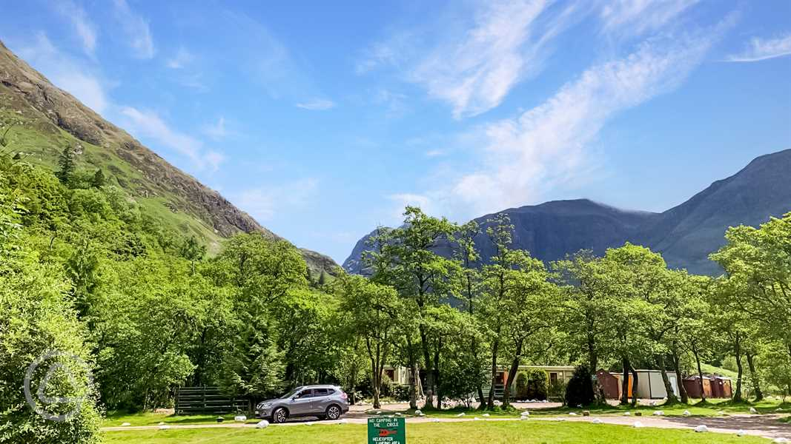
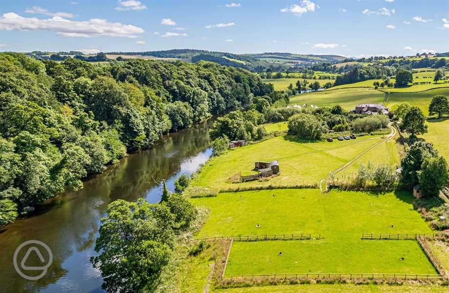

Red Squirrel Campsite
Not for squirrels only but ideally a good place to watch squirrels in plenty. A haven for families, adventure enthusiasts, and hikers alike. Here, you'll find spacious, open
pitches that grant you the freedom to select your ideal spot, or you can opt for one of our convenient onsite bell
tents, fully prepared for your stay. Plus, if you're in the mood for dining out, a charming pub is just a 15-minute
stroll from the site. For more culinary options, take a short drive or a leisurely woodland walk to the nearby village,
where you'll discover additional restaurants and a local shop. Your perfect outdoor getaway awaits!

Drybeck Farm
Nestled on the banks of the River Eden in Cumbria's Eden Valley, it offers old-school camping and unique glamping
options with private hot tubs. Ideal for families, couples, and friends seeking a Lake District adventure with wild
swimming, woodland strolls, and outdoor relaxation.
Graig Wen Campsite
Graig Wen is located in Snowdonia National Park, offering stunning views of the Mawddach Estuary between Barmouth and
Dolgellau. With breathtaking scenery and direct access to the picturesque Mawddach Trail, this site is a nature lover's
paradise. Surrounded by mountains, and with attractions like Cader Idris, sandy beaches, historic castles, steam trains,
biking trails, and thrilling zip lines nearby, Graig Wen provides the perfect setting for recharging. Whether you prefer
camping or glamping in yurts, bell tents, or a chic shepherd's hut, it's your gateway to a memorable adventure in this
beautiful region.
Sleningford Watermill Caravan and Camping Park
Sleningford Watermill Caravan and Camping Park is a prestigious 14-acre site nestled along the banks of the River Ure,
adjacent to the stunning Nidderdale Area of Outstanding Natural Beauty. This award-winning park warmly accommodates
tents, tourers, and RVs, offering ample and well-maintained grass pitches with optional electric hook-ups. It serves as
both a tranquil retreat for guests and a sanctuary for local wildlife, exemplified by its prestigious David Bellamy
Conservation Gold Award. Additionally, the park provides easy access to picturesque countryside walks, ensuring a
delightful experience for all nature enthusiasts.
Wolf Meadows Farm
Nestled in North Devon, Wolf Meadows Farm offers the perfect blend of nature and adventure. This charming family-run
smallholding welcomes wild campers and offers a variety of barrel pods, all situated alongside the picturesque Taw
river. Whether you choose to set up camp within the serene bluebell woodland or in the expansive meadow, there's a spot
for everyone. Families can enjoy paddling in the river, while there are also great locations for a refreshing swim and
wildlife spotting in beautiful Devon. Unwind amidst nature by the campfire or venture out to explore the nearby Dartmoor
and coastal areas, just 40 minutes away. Plus, it's a dog-friendly site, so your furry friends are welcome too!